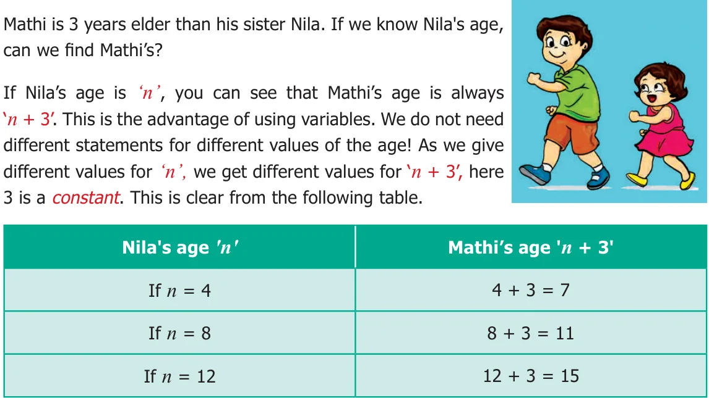
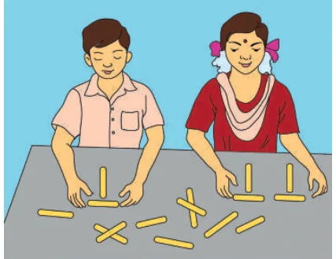
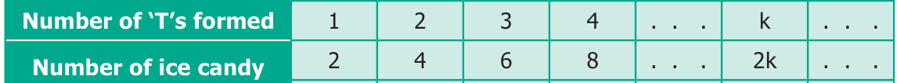

Consider the following situations.
Situation 1:

Situation 2:
Patterns using Ice Candy Sticks

Pari and Manimegalai made some patterns with ice candy sticks.
To make one ‘T’, how many ice candy sticks are used by them? (Two sticks) To make two ‘T’s, how many ice candy sticks are used by them? (Four sticks) Continuing this, they prepared the following table to find the number of ice candy sticks used by them

From the above table, it is clear that if the number of ‘T’s required by them is ‘k’ \(\frac{\). . .}{then the} number of ice candy sticks required by them will be \(k \times 2 = 2k\). Here ‘k’ is a variable.
TRY THESE
Use a variable to write the rule, which gives the number of ice candy sticks required
to make the following patterns.
- (i)a pattern of letter C as (ii) a pattern of letter M as